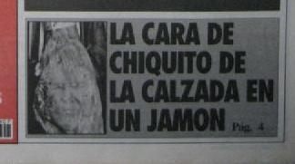

Chiquito de la Calzada
 De: La Frikipedia, la enciclopedia extremadamente seria.
De: La Frikipedia, la enciclopedia extremadamente seria.
 Se puede aparecer en cualquier lugar
Criatura omnipoderosa salida directamente de entre los tentáculos del Monstruo de Espagueti Volador y Hermano mayor de Papuchi. De él se dice que fué el padre creador de todos los Wombats, a los que cedió una minima parte de su poder con la condición de que le fuera devuelto al final de los tiempos junto con una fotocopia de sus carnets de identidad.
Creador de chistes de gran categoría y de expresiones que nunca dejarán nuestro vocabulario, tales como:
'Ere un to'pedo de pe'sona!' 'Tengo un amatoma mu graaaande en el diodenooo' 'ponme un cubalibre con cacacola que quiero coje un pelotaso'!
Expresiones que se oyen en cualquier contexto en nuestra sociedad. Y SI NO SE OYEN SE DEBERIAN OÍR!!!
Su naturaleza pacífica le permite coexistir con este universo sin perjudicarlo. No obstante no sería de extrañar que fuese cierto el rumor que circula entre la Comunidad Científica de que venció a su hermano Papuchi usando su particular versión del raro raro raro. Según la teoría, este ultimo hecho, se ha mantenido en el mas absoluto de los secretos, dado que el benébolo Chiquito de la Calzada lo permite, y su hermano ha tratado de ocultarlo durante siglos para mantener su imagen de ser mas poderoso y chulo del universo entre los seres humanos de este mundo.
Dado que un ente de esta magnitud no tiene preocupaciones en la vida, Chiquito se aburre desde hace siglos, y solo es capaz de entretenerse cuando encuentra un quehacer que nunca antes ha probado, momento en el cual se reencarna para ejercer aquello que se propone.
Biografía
Nació en el año © ACPB (Antes de que cristo perdiera la boina) y fue en fundador de Málaga. A sus dos añitos aprendió a decir ¡Jarl! Y a los cuatro ¡Fistro! Tras estos avances, el mounstro de espagueti decidió crear un mundo a su medida para permitirle mostrar su talento duodenal. Durante el proceso, y mas exactamente en el momento en que empezó el Badabín badabán, Chiquito le dijo a su padre (el Fari) que solo en ese mundo se iba a aburrir, y dios, en su infinita sabiduría creó a Pepe para que no estuviera nunca mas solo.
Tras dos por pi elevado a algo años durante los que no se sabe lo que ocurrió Hasecorp creó a la humanidad y chiquito comenzó su andanza entre nosotros.
Cuando vió que su hermano pequeño abusaba de los humanos creó a los wombats a imagen y semejanza de un grano que le salió en la ingle. Así quedó controlado el tema, y chiquito, relajado, se fué a dar una vuelta por el éter.
Desde ahí influyo psiquicamente a los pinguinos de todo el mundo provocando finalmente, que a modo de protesta estos ultimos se precipitaran sobre la tierra. Esta lluvia de pinguinos dividió el antiguo mundo llamado Pangea hasta parecerse a lo que conocemos en la actualidad como los cinco continentes.
Siglos mas tarde regresó para ver como andaba todo, se reencarnó en Drácula y se estableció en el país autocreado por él mismo de Chiquitistán. De pronto había decidido que los humanos habían dejado de caerle bien, y empezó a empalar a todo el que pilló, pero un poco después se arrepintió, y, pese a haberse reencarnado en un ser inmortal... murió.
Un tiempo después regresó, y empezó a contar chistes, pero no unos chistes cualquiera, no, sus chistes fueron capaces de hacer que Seiya, el de los Caballeros del Zodiaco muriese de un ataque.
Si, eso que no habían sido capaces de hacer ni unos cuantos caballeros de oro, ni poseidón ni incluso el dibujante... Pues chiquito lo consiguíó. De hecho en los nuevos capítulos que están echando en Japón, Seiya está recreado digitalmente.
Gracias a esto, ademas, Chiquito fué elegido presidente bajo el sobrenombre de Conde Brácula, y mantuvo este cargo durante lo menos 15 segundos y medio.
Posteriormente, a la humanidad dejaron de hacerle tanta gracia sus chistes, por lo que fué dejando de salir en televisión. Actualmente vive en el polo norte, en la antigua mansión de mulupuki, al que tiene durmiendo en el felpudo de la puerta.
Unas muestras de la literatura Chiquitistaní.
- Te vi a parti el diodenooooooooorr!!!
- No puedor no puedoooorr!!
- Tengo un amatoma muy grande, cobardeeerr!!
- Negroooooooll....!!
- A pitikann!!! a pitikanden kondemorrllll!!
- Ladrón!!! Sersuarllll!!
- Te huelen mas los pies que un camello cargado de muebles!!
- Por la gloria de mi madre!!
- Que eres más chulo que Rappel en un OVNI, ¡QUÉ LO SEPAS!
- Eres más lento que la Vuelta Ciclista a España en Ciclostatic.!!
- Lo tienerr más difísil que Stivi Guonder navegando en Internet... ¡¡¡te da cuen!!!
- Estás más quemado que los ceniceros del transbordador Challengér.!!
- Estás más quemado que el telefonillo del Coloso en Llamas.!!
- Cantas más que la hormiga atómica en una manifestación de Grin pís.!!
- Bajas más rápido que Tarzán con vaselinarl, en las lianas. ¡¡QUÉ LO SEPAS!!
- Eres más simple que los diálogos de chita, Jarll.!!
- Eres más corto que las mangas de un chalecooooorrrrr.!!
- Estás más claro que la sopa de un asilorr.!!
- Tienes más peligro que Eduardo Manostijeras poniéndose las lentillas.!!
- Tienes menos fallos que el examen de conducir de Michael Knight. !!
- Estás menos concentrado que el lavavajillas de VillaAbajo!!
- ¡¡Eres más Topedo que Lucas Grijander!!
- Que tienes más peligro que Alf en un anuncio de Whiskas ¡¡Jarr!!
- Pecadooorrr, eres más doloroso que un kleenex de paperl de lija.!!
- Gastas menos que una lombriz en guantes, fistro humano!!
- Qué estás más preparado que las amas de casa del anuncio de Dixan!!
- Que te enrollas más que el ADN. ¡¿Te dá cuén?!
- Eres más lento que un accidente entre caracoles. ¡¡¡¡Te da quen!!!!
- Que eres más soso que un yougurt de agua!!!
- Estás más lleno que un autobús de la EMT en hora punta!!
- ¡¡Pecadorrrrrr!! Eres más simple que un capítulo de los fruitis!!
- Tor mundo tiene un graduadoscolarrr y tu tiene unatiqueta de anís de monorrr!!!
- Eres más raro que un documental en verso!!
- Eres más feo que un twingo decapotable!!
- Tiene menos tornillos que una cometa.! ¡¡¡cobarder!!!
- ¡Eres más de campo que la abeja Maya pecadorrr !!!
- ¡Qué desafinas más que Caminero en el anuncio de las natillas, jarrrrl!!!
- Tienes menos cuello que una lata de Pepsi!!
- Jarrll!!! Tienes menos curvas que una pista de aterrizaje, cobarderr!!!!!!!
- Tienes más peligro que la autoescuela de Stivi Guonderl!!
- Tienes más trabajo que Scalder y Mully haciendo un informer der Fary!!
- Tienes menos futuro que Torrebruno buscando pelea en Chinatow!!
- Te mueves más que Lina Morgan en el terremoto de Los Ángeles!!
- Tienes más morriña que E.T. el extraterrestrerrrlll!!
- Qué te estiras más que los brazos del Inspector Gadget!!
- JARRL¡ Tienes más peligro que Rambo en un restaurante coreano!!
- Qué trabajas menos que los reyes Magos, que sólo lo hacen una noche al año y resulta que es mentirarrl!!
- Trabajas menos que el fotógrafo del BOE!!
- Estás más nervioso que Sorpresa Sorpresa!!
- Estás más contento que Isabel Gemio con una familia de inmigrantes separados!!
- Eres más pelotero que el mayordomo de los "Ferrero Roche"!!
- Eres más finstro que el que dijo "Jaaarrr!" mirándose al espejo!!
- Eres más raro de ver, que un repartidor del Telepizza en un semáfororrrl!!
- Esta Web me gusta más que a MacGyver ir de invitado a Bricomanía!!
- Anda pecadorrr!!! Eres más original que un guardia civil con tricornio rosa!!
- Que tienes menos futuro que Schwazzenagger bailando el lago de los cisnes!!
- Haaarrlll!! Pecador!! Que tienes más chispa que los fuegos artificiales de Villarriba!!
- Tienes más suerte que el motorista del anuncio de Golden Lady!!
- Tienes menos futuro que chiwaka en un anuncio de medias Mariclear!!
- Eres más falso que los collares del negro del EQUIPO A!!
- Eres más triste que Enrique y Ana cantándole a Calimero!!
- Eres más peligroso que un alumno de autoescuela el primer día de prácticas!!
- Es más difícil que lavarse los pies en una botellarrl!!
- Que eres más falso que un sprint de Ben Johnson. Jarrrlll!!!
- Tiener más poblemar que Eduardo Manostijeras montando el Belén por Navidaaaaarr!!
- Eres más difícil que Hemoal!!
- Tienes más dienter que el plato de la bicicletar de Indurainnnr!!
- Tiene más letras que la factura de un Mercedes!!
- Eso es más improbable que un concierto de Madonna en la Plaza de San Pedro!!
- Estás más perdido que una hormiga en un libro de mil páginas!!
- Te mueves menos que el perro de Heidi!!
- Eres más sufrido que Imperioso que soporta el peso de Gil y Gil (y Jar y Jar).
- Que dura más que un combate de los Caballeros del Zodiacorrr.
- Vas más ciego que un murciélago con unas Ray-Ban.
- Al pan Peich y al vino handerr!!!
- Eres más verde que un estriptis de las tortuga ninja.
- Pecador!!! Agobias más que el Dark Vader con un megáfono.
- Estás más acorralado que los gérmenes del Pato WC.
- Eres más simple que los gases nobles.
- Eres más feo que el hermano de Espinete con un ojo de cristal, jaarrr!!
- Anda, que vas más cargado que la fiambrera de Pavarotti(en paz descanse).
- Estás más quemado que el telefonillo del coloso en llamas.
- Tienes más peligro que Willy-Fog con un abono transportes. ¡Cobarde!
- Estás más contento que Gepetto con la Black&Decker.
- Te repites más que el Equipo A en Antena3.
- Tiene más avances tecnológicos que la armadura de Batman.
- Que tienes menos fondos que una lata de anchoa.
- Esa moto tiene más Km. que la Bultaco de Angel Nietor!
- Eres más rápido que Forrest Gump en los San Fermines, fistro, pecador.
- Eres más simple que el vocabulario del Correcaminos: Mec-mec.
- Te mueves más que la camara del Tomate.
- Eres más repetitivor que Pedro Picahander, que siempre corre por delante de la misma casa.
- Que ésto está maasss shungo que la nariz de Paco Rabaaal!! Jaaarrll!!
- Tienes más labia que el del anuncio de Telefónica.
- Tiene menos luces que el Belén de la ONCE.
- Estás más perdido que la Sirenita en Instinto Básico.
- Eres más larga que la infancia de Heidi.
- Que tienes más puntería que el que tira los donuts, no puedo, no puedorl.
- Eres más lento que el coche de Dekker, que nunca coge al equipo A.
- Eres más ridículo que Rappel haciendo el pino (con túnica).
- Tienes más puntos de vista que Trueba en una tienda de espejos.
- Que estás más tieso que el codo de un click de Playmobil.
- Que tienes menos audiensia que una reposición de los mejores momentos de la Carta de Ajuste !!!!Jaaarrrrlll!!!!!
- Eres tan feo que cuando naciste tu padre busco la cámara ocultarrr
- !!! Tienes más trabajo que el Logopeda de la Mula Francisrrrr!!!!
- Tienes más puntería que Robin Hood después de una tila.
- Date cuen que eres más malo que Gargamel restreñío.
- Eres más pesado que un tanque en la solapa.
- Eres más largo que el campo de fútbol de Oliver y Benji.
- Estás más tenso que el M.A. en un F16.
- Estás más seco que la cantimplora del Lawrence de Arabia.
- Te despeinas menos que Cindy Crawford en el vídeo de aerobic.
- Eres más pesadorrr que una bandadarr de ranas Gustavo.
- Tienes más peligro que Caminero cantando con los pitufos.
- Tienes más cabeza que Naranjito con paperas. Jarllll!!!
- Tienes más atracciones que el Tibidaborrr!
- Eres más lila que el vampiro de Barrio Sésamo.
- Jaaarrrr, que eres más inútil que una bocina en un 747.
- Comoorrr, eres tan corto que te vas a la vendimia y te llevas uvas de postre.
- Eres más pesado que escuchar un recopilatorio de los Pecos en japonés.
- Tienes menos interés que los cuartos de final de la O.T.I.
- Eres mas pesado que un abanico de tablones.
- Te mueves menos que Don Pimpon en una cama de velcro pecadorrrr.
- Por diodeno vaginal los conductos vocales
- Al ataqueeeeer!
- Voy ar medico a que me haga un cacheo sersuar de los bronquio!
- Que caló hace aqui, que se ven a las rana con cantimplora! jaaarrrl!!
- Ehto ya no vale pa na!
- relájatee!!
- cogéhlo!
- le dise er niño ar pare -papar, papar, llevame ar circo- le dise er padre -nor! er que quiera verte que venga a la casa!-
- ahandemorejagua!
- tu ere un pecado de la pradera!
- ombre malo violento!!
- ere un fistro, to er mundo tiene un graduao escolar y tu tiene una etiqueta de anis der mono! cobarder!
- Un lago negro un lago blanco... cobarde!!
- Ere ma soso que la wikipedia en latín!!!!
- Ere ma simple que una botella sin tapón!!!
- Ere ma raro que un moco de Avatá!
- No me toques las palmas que me defeco.
En el Futuro
Se dice que cuando regrese al eter la tierra desaparecerá bajo lo que se ha denominado la Segunda Oleada Pinguinaria y solo aquellos seres que alcancen la verdad absoluta y por ello vuelvan a reirse de sus chistes, sobrevivirán.
Existe una sociedad secreta de adoradores de Chiquito que se caracteriza por que andan siempre con una mano en la espalda simulando tener reuma. Son altamente hilarantes y ejecutan un sacrificio de wombat cada 7 años para que el gran Chiquito vuelva a la tele y presente una nueva temporada del informal, o cuanto menos para que protagonice otra tanda de anuncios del caldofrán de Ganillablancarrrrr!!!.
¿Sabías que...
- ...Tolkien se inspiró en Chiquito para crear a Tom Bombadil?
- ...a pesar de su nombre, chiquito no es tan pequeño? Lo que pasa que va más encorvado que Gárgamel buscando un euro.
- ...Condemor y Papá Piquillo eran los nombres de tres importantes dioses de la mitología Chichimeca y Zapoteca?
- ...Chiquito es Lord Voldemort en Harry Petas?
- ...Chiquito se quedo manco de beber leche caducada Covap intentando imitar a Chanquete y se quedo manco (le llamaban el manco de lapanto-JA), pero sus manos fueron recompuestas por el mecanico "Tio Bernardo"?
- ...ONG y le llamó Jarl Gore?
- ...Chiquito dono sangre a Bruce Lee y por eso murio a causa de que la sangre de chiquito contenia altas cantidades de Coca-Cola y aceite de colza?
- ...Chiquito posee el gen de la risa (otorga a su poseedor el poder contar chistes pesimos, pero con su simple jeta hacer llorar de la risa al publico)
- ...Chiquito toma caramelos Jorls, que alivian lor dolore y despejan el fistro diodenar del conducto bucar? Te da cuen??? y piccolo lo violo
- ...Chiquito tiene ese andar caracteristico porque siempre lleva zapatos de golf pero al reves
- ...su trabajo en el cine no se limita a la actuación. También es doblador de películas y fue escogido para doblar Matrix
Chistes famosos
Aqui os dejo la URL de dos de sus mejores chistes...cobarde!!
[1]
Videos de chiquito de la calzada
Ver también por la gloria de mi madre
Autor(es):
- Krusher
- Nexo
- Jarlaxle
- Cortocircuito
- Emedeme
- Doctor grijander
- 123456
- Max Slug
- Epikurolibre
- Bazuke
Frikipedia 2005-2016, Licencia
GFDL 1.2 - Extraído por FrikiLeaks